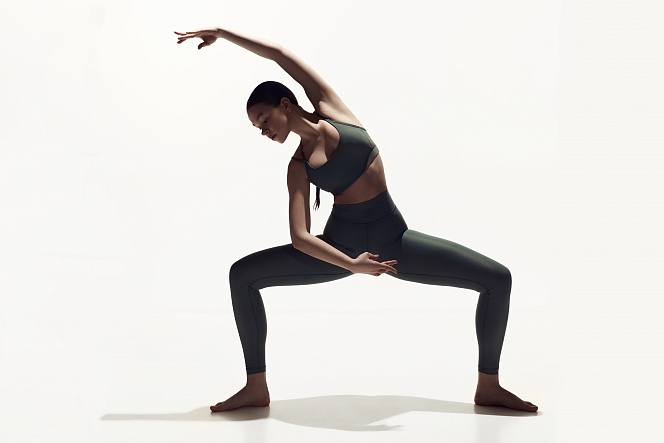

Barre
Barre — це система тренувань, розроблена ще в 1960 році. Заняття проходять біля балетного верстата під музику. У напрямку барре поєдналися елементи балету, функціонально-силового тренінгу, пілатесу та йоги. Додатково можуть бути задіяні обважнювачі або гантелі з вагою не більше 1-2 кг.
Показання для Барре тренування
-
Рівна постава
Всі вправи (за невеликим винятком) виконуються з абсолютно рівною спиною, на кшталт балетним танцюристам.
-
Альтернатива набридлим тренуванням
Ефективність вправ біля верстату можна порівняти з хорошим функціональним тренуванням. Відмінна можливість урізноманітнити свої заняття, не зменшуючи навантаження.
-
Витонченість жестів
Балет неможливо уявити без витончених рук. Так само як і без красивої витягнутої шиї та гордо піднесеного підборіддя.
-
Безпечне навантаження
Тут немає ривків, всі вправи виконуються в помірному темпі і з невеликою амплітудою.